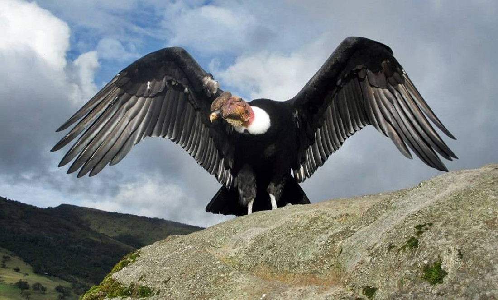

Fauna
El cóndor andino (Vultur gryphus), también conocido como cóndor de los Andes o simplemente cóndor, es una especie de ave de la familia Cathartidae, que habita en la cordillera de los Andes y las costas adyacentes del océano Pacífico en el oeste de América del Sur. Es el ave voladora más grande del mundo por la medida combinada de peso (15 kg) y envergadura máxima (3,3 m). Generalmente se le considera el ave rapaz más grande del mundo. Tiene plumaje negro con un collar de plumas blancas que rodea la base del cuello y, especialmente en el macho, grandes manchas blancas en las alas. La cabeza y el cuello casi no tienen plumas y son de un color rojo apagado, que puede enrojecerse y, por lo tanto, cambiar de color en respuesta al estado emocional del ave. El macho tiene una barba en el cuello y una gran cresta o carúncula de color rojo oscuro en la coronilla. La hembra es más pequeña que el macho, una excepción a la regla entre las aves de presa. Es principalmente un ave carroñera pues prefiere cadáveres grandes, como los de ciervo o ganado. Alcanza la madurez sexual a los cinco o seis años de edad y anida en elevaciones de entre los 3000 y los 5000 m s. n. m., generalmente en formaciones rocosas inaccesibles. Posee una tasa de reproducción muy baja pues suelen poner uno o dos huevos. Es una de las aves más longevas del mundo, con una esperanza de vida de más de setenta años en algunos casos. Es un símbolo nacional de Argentina, Bolivia, Chile, Colombia, Ecuador y Perú, y tiene un importante papel en el folclore y la mitología de las regiones andinas de Sudamérica.1314 La Unión Internacional para la Conservación de la Naturaleza la cataloga como una especie vulnerable pues sufre la pérdida de su hábitat y el envenenamiento por la ingesta de animales intoxicados o de los propios cebos envenenados colocados ilegalmente por cazadores y ganaderos. Aquí abajo dejaré un video sobre este animal
El monito del monte (Dromiciops gliroides) es una especie de marsupial microbioterio de la familia Microbiotheriidae que habita los bosques templados del suroeste de la Patagonia. A pesar de su nombre, este animal no tiene ningún parentesco con los primates. Los monitos del monte son animales pequeños, de unos 20-25 cm desde el hocico hasta la cola, de los cuales entre 9 y 13 cm son de la cola. Pesan entre 20 y 42 gramos. Poseen hocico corto y ojos grandes y oscuros. El color del pelo es marrón a pardo grisáceo en el dorso y blanco o gris en el vientre, los hombros y las patas. Las hembras poseen un marsupio con cuatro mamas en su interior. La cola es prensil.
El puma, león de montaña o león americano (Puma concolor) es un mamífero carnívoro de la familia Felidae nativo de América. Este felino vive en más lugares que cualquier otro mamífero silvestre terrestre del continente, ya que su área de distribución se extiende desde el Yukón, en Canadá, hasta el sur de la cordillera de los Andes y la Patagonia en América del Sur. Con esta amplia distribución geográfica, el puma tiene decenas de nombres y es mencionado con diversas referencias en la mitología de los pueblos aborígenes de América y también en la cultura contemporánea. Además, el puma es territorial y tiene una baja densidad de población. El puma es adaptable y generalista, por lo que vive en los principales biomas de toda América. Es el segundo mayor félido del continente, después del jaguar, y el cuarto más grande del mundo, después del tigre, y el león. Su tamaño es algo mayor que el del leopardo, aunque está más emparentado con los pequeños felinos. Eso se aprecia notablemente en que, el puma, a diferencia de los grandes félidos del género Panthera, que pueden rugir (a excepción del irbis), el puma ronronea como los felinos menores.
Lycalopex culpaeus, conocido como zorro culpeo, raposa colorada o zorro colorado (norte de Ecuador), es el segundo cánido viviente más grande de Sudamérica, solo superado por el lobo de crin o aguará guazú. Tanto las patas como la cabeza son rojizas; el vientre, cuello y boca, blancos; y el lomo, gris rayado de negro. La cola está muy poblada de pelos grises, los cuales se tornan negros hacia la punta. Existen avistamientos de ejemplares completamente albinos.Los especímenes de la zona continental sudamericana pesan entre 8 a 11 kg, pero la subespecie de Tierra del Fuego (L. c. lycoides) es significativamente mayor, ya que llega a los 14 kg. Se alimenta de roedores, liebres, aves y lagartos; en menor medida consume plantas y carroña. Otra importante presa del zorro colorado es el cervato del huemul. En algunas zonas muy antropizadas ataca a los rebaños de ovejas, razón por la cual es perseguido duramente por los ganaderos, que le disparan o envenenan carroñas. Como consecuencia, se ha vuelto muy raro en algunas zonas y en otras se ha extinguido.
El aguilucho de cola rojiza, busardo patagón, gavilán de cola rufa o peuco negro (Buteo ventralis) es una especie de ave falconiforme de la familia Accipitridae propia de los bosques patagónicos del sur de Chile y en Argentina; no se conocen subespecies. El adulto es café negruzco por encima. La garganta es blanca con bigotes negros. El pecho es ocre con finas pintas longitudinales negras. El abdomen es blanquecino con pintas café acaneladas especialmente hacia los flancos. Las calzas son acaneladas con barras transversales café rojizas. La cola es rojiza con nueve barras transversales finas y negras, siendo la última más gruesa y terminando en un borde blanco. El juvenil posee durante el primer año el pecho, abdomen y calzas blancos, con pintas longitudinales negras. Los lados del cuello, flancos, abdomen y calzas presentan pintas negras romboidales. La cola es gris con rayas transversales negras y con la punta blanco sucio. Durante el segundo año se torna café claro y al tercer año de vida se oscurece aún más, adquiriendo la cola un tinte rojizo, el cual se intensifica hacia el cuarto año de vida. Existen ejemplares melánicos, "morfo oscuro", de coloración general negro rojiza con la parte inferior de las remiges y rectrices blanco sucio. Los ejemplares juveniles presentan una espalda de coloración grisácea, pecho notoriamente blanco sin marcas. Cabeza, cuello, flancos y abdomen con líneas longitudinales negras. Cola negra con rayas negras y punta blanca.